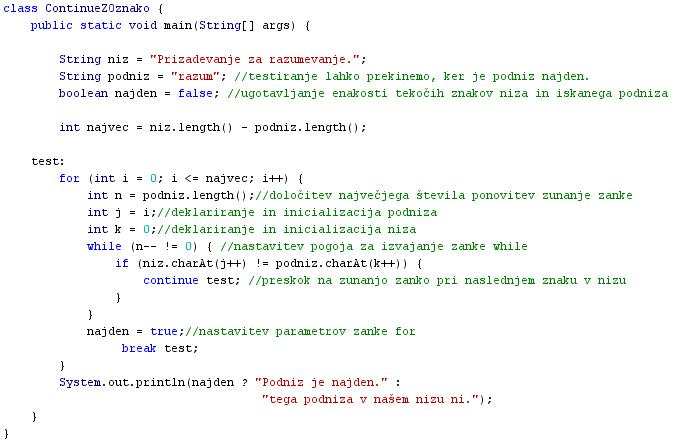

STAVEK RETURN
- Zadnji v skupini stavkov za vejitve je stavek "return".
- Angleška beseda "return" pomeni "vrnitev" ali "vrniti se".
- S stavkom "return" dosežemo prekinitev izvajanja trenutno tekoèe metode in vrnitev poteka izvajanja programa v toèko, v kateri smo poklicali to metodo.
- Metoda je krajši programèek, ki teèe znotraj nekega drugega ali nadrejenega programa.
- Nadrejeni program imenujemo tudi glavni program.
- Metodo, ki jo poklièemo v glavni program, imenujemo tudi podprogram ali subrutina.
- Stavek "return" ima dve obliki.
- Prva oblika stavka "return" vrne neko izraèunano vrednost.
- Druga oblika stavka "return" ne vrne nobene vrednosti.
- Stavek "retun" uporabimo vedno ob klicu metode.
- Èe je metoda taka, da vrne neko izraèunano vrednost, uporabimo prvo obliko stavka "return".
- Èe je metoda taka, da ne vrne nobene izraèunane vrednosti, uporabimo drugo obliko stavka. "return".
- Za konec te uène enote pa si oglejmo še primer stavka continue z oznako, ki smo ga dolžni še iz prejšnje uène enote.
STAVEK CONTINUE Z OZNAKO
- Ta stavek preskoèi tisto ponovitev zunanje zanke, ki se trenutno izvaja.
- Stavek "continue" brez oznake bi skoèil na stavek, ki sledi zanki.
- Stavek "continue" z oznako pa skoèi na tisto mesto v programu, kjer je zapisana oznaka.
- Oznaka je v spodnjem primeru beseda "test".
- Stavek "continue" z oznako omogoèa veèji nadzor nad potekom programa, saj lahko sami doloèimo, kje se izvajanje programa nadaljuje.
- Opis delovanja programa: Spodnji program uporablja gnezdene ali vgnezdene zanke za iskanje niza znotraj drugega niza. Eno manjšo zanko potrebujemo za pomikanje vzdolž podniza. Drugo veèjo zanko potrebujemo za pomikanje vzdolž niza. Stavek "continue" z oznako uporabimo v tem programu zato, da preskoèimo nepotrebno ponavljanje zunanje zanke.
class ContinueZOznako {
public static void main(String[] args) {
String niz = "Prizadevanje za razumevanje.";
String podniz = "razum";
boolean najden = false;
int najvec = niz.length() - podniz.length();
test:
for (int i = 0; i <= najvec; i++) {
int n = podniz.length();
int j = i;
int k = 0;
while (n-- != 0) {
if (niz.charAt(j++)
!= podniz.charAt(k++)) {
continue test;
}
}
najden = true;
break test;
}
System.out.println(najden ? "Podniz je najden." :
"tega podniza v našem nizu ni.");
}
}
-
VAJA 27:
- V okolju za pisanje izvorne kode v jeziku Java, za prevajanje in za interaktivno delo zapiši zgornji program "ContinueZOznako". Pomagaj si s sliko.
- Kodo lahko tudi kopiraš iz te datoteke in jo prilepiš v okolje, v katerem pišeš programèke. Pozor: koda, ki jo boš kopiral/a, vsebuje eno, dve, tri ali štiri napake. Èe želiš, da bo program deloval, moraš napake odkriti in jih odpraviti.
- Izvorno kodo shrani pod imenom "ImePriimek27.java". ImePriimek je seveda tvoje lastno ime in priimek.
- Datoteko "ImePriimek27.java" prevedi.
- Prevedeno datoteko zaženi, preveri rezultat v interaktivnem oknu in poklièi profesorja, da vidi rezultat.
1. Vprašanja:
1. Kaj pomeni angleška beseda "return"?
2. Kaj je naloga stavka "return" v Javi?
3. Kaj je metoda?
4. Kateri so še drugi nazivi za metodo?
5. Kaj je glavni program?
6. Kateri sta dve obliki stavka "return" in kakšna je razlika med njima?
7. V èem se razlikuje stavek "continue" z oznako od stavka "continue" brez oznake?
8. Zapiši niz, v katerem išèemo podniz v vaji te uène enote.
9. Zapiši podniz, ki ga išèemo v vaji te uène enote.
10. V zgledu izvorne kode vaje v tej uèni enoti so pojasnila napisana na neustreznih mestih. V svojem programu zapiši ta pojasnila tako, da bodo pravilno pojasnjevala stavke, ki so jim pripisana.
2. Zapiši od ene do pet kljuènih besed, ki povzemajo vsebino te uène enote.
3. Povezave do dodatnih informacij.
Spletni priroènik proizvajalca programskega okolja Java. To je podjetje Sun.
|